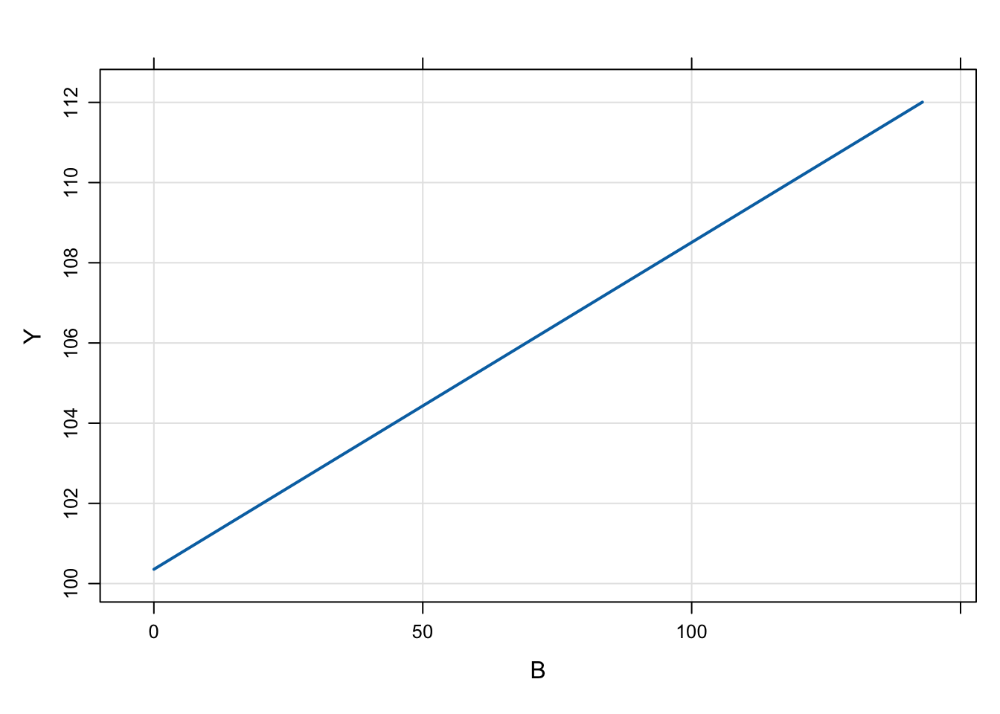

Models without compartments ($PRED)
This vignette introduces a new formal code block for writing models where there are no compartments. The block is named after the analgous NONMEM block called $PRED. This functionality has always been possible with mrgsolve, but only now is there a code block dedicated to these models. Also, a relaxed set of data set constraints have been put in place when these types of models are invoked.
1 Status
The functionality in this vignette can only be access from the GitHub version. We will update this vignette once these features are rolled into a release on CRAN.
2 Example model
As a most-basic model, we look at the pred1 model in modlib()
library(mrgsolve)
mod <- mread_cache("pred1", modlib())## Creating build directory: build## Building pred1 ... done.The model code is
$PROB
An example model expressed in closed form
$PARAM B = -1, beta0 = 100, beta1 = 0.1
$OMEGA 2 0.3
$PRED
double beta0i = beta0 + ETA(1);
double beta1i = beta1*exp(ETA(2));
capture Y = beta0i + beta1i*B;This is a random-intercept, random slope linear model. Like other models in mrgsolve, you can write parameters ($PARAM), and random effects ($OMEGA). But the model is actually written in $PRED.
When mrgsolve finds $PRED, it will generate an error if it also finds $MAIN, $TABLE, or $ODE. However, the code that gets entered into $PRED would function exactly as if you put it in $TABLE.
In the example model, the response is a function of the parameter B, so we’ll generate an input data set with some values of B
library(dplyr)
data <- data_frame(ID = 1, B = exp(rnorm(100, 0,2)))## Warning: `data_frame()` is deprecated, use `tibble()`.
## This warning is displayed once per session.head(data)## # A tibble: 6 x 2
## ID B
## <dbl> <dbl>
## 1 1 6.08
## 2 1 6.99
## 3 1 5.39
## 4 1 0.0779
## 5 1 0.0776
## 6 1 11.7out <- mrgsim_d(mod,data,carry.out="B")
plot(out, Y~B)
Like other models, we can simulate from a population
library(purrr)
set.seed(223)
df <- map_df(1:30, function(i) data_frame(ID = i, B = seq(0,30,1)))
head(df)## # A tibble: 6 x 2
## ID B
## <int> <dbl>
## 1 1 0
## 2 1 1
## 3 1 2
## 4 1 3
## 5 1 4
## 6 1 5mod %>%
data_set(df) %>%
mrgsim(carry.out="B") %>%
plot(Y ~ B)
3 PK/PD Model
Here is an implementation of a PK/PD model using $PRED
In this modeL
- Calculate
CLas a function ofWTand a random effect - Derive
AUCfromCLandDOSE - The response (
Y) is a calculated fromAUCand the Emax model parameters
code <- '
$PARAM TVCL = 1, WT = 70, AUC50 = 20, DOSE = 100, E0 = 35, EMAX = 2.4
$OMEGA 1
$SIGMA 100
$PRED
double CL = TVCL*pow(WT/70,0.75)*exp(ETA(1));
capture AUC = DOSE/CL;
capture Y = E0*(1+EMAX*AUC/(AUC50+AUC))+EPS(1);
'mod <- mcode_cache("pkpd", code)## Building pkpd ... done.To simulate, look at 50 subjects at each of 5 doses
data <-
expand.idata(DOSE = c(30,50,80,110,200),ID = 1:50) %>%
mutate(WT = exp(rnorm(n(),log(80),1)))
head(data)## ID DOSE WT
## 1 1 30 59.13254
## 2 2 50 317.32739
## 3 3 80 242.15746
## 4 4 110 170.78136
## 5 5 200 248.18054
## 6 6 30 51.22012out <- mrgsim_d(mod,data,carry.out="WT,DOSE") %>% as.data.frame()
head(out)## ID time WT DOSE AUC Y
## 1 1 0 59.13254 30 231.90852 110.61330
## 2 2 0 317.32739 50 36.76051 85.27834
## 3 3 0 242.15746 80 36.54808 98.90407
## 4 4 0 170.78136 110 23.68354 80.29131
## 5 5 0 248.18054 200 331.10229 108.81926
## 6 6 0 51.22012 30 251.58373 116.09649Plot the response (Y) versus AUC, colored by dose
library(ggplot2)
ggplot(out, aes(AUC,Y,col =factor(DOSE))) +
geom_point() +
scale_x_continuous(trans = "log", breaks = 10^seq(-4,4)) +
geom_smooth(aes(AUC,Y),se = FALSE,col="darkgrey") + theme_bw() +
scale_color_brewer(palette = "Set2", name = "") +
theme(legend.position = "top")## `geom_smooth()` using method = 'loess' and formula 'y ~ x'
mrgsolve: mrgsolve.github.io | Metrum Research Group: metrumrg.com